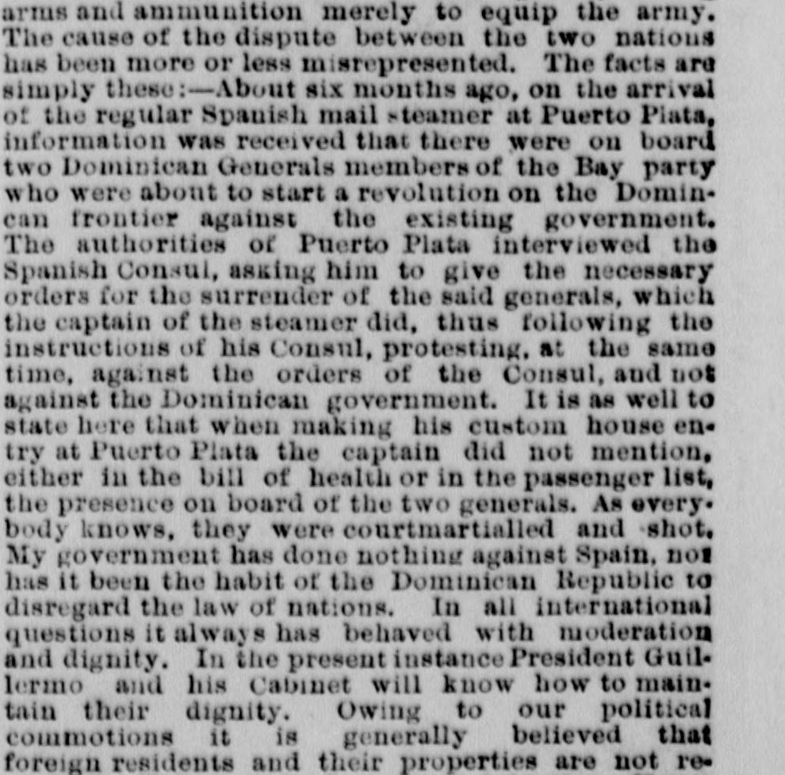

The facts arc imply these:?About six mouths ago, on the arrivalLos hechos son simplemente estos: Hace unos seis meses, a la llegada
The New York Herald. New York [N.Y.], August 10, 1879. Page 5. View the originalVer el original

Based on the provided excerpt, The New York Herald reported that about six months prior, the Spanish mail steamer arriving at Puerto Plata carried two Dominican generals belonging to the Hay party who intended to start a revolution against the Dominican government. Although the steamer's captain initially omitted the generals from his custom-house entries, passenger list, and bill of health, the captain ultimately surrendered them following instructions from the Spanish Consul, and the generals were subsequently court-martialed and shot. The article also asserted that the Dominican Republic, led by President Guilerino and his Cabinet, had acted with moderation and dignity and done nothing against Spain.A tenor del extracto facilitado, The New York Herald refirió que, unos seis meses atrás, el vapor correo español arribado a Puerto Plata conducía a dos generales dominicanos adictos a la facción baecista resueltos a encender la rebelión contra las autoridades dominicanas. Si bien el capitán del mercante omitió inicialmente sus nombres en los manifiestos de aduana, listas de pasaje y patentes de sanidad, entregó finalmente a los prófugos por intimación del cónsul español, siendo los militares juzgados en consejo de guerra y pasados por las armas. Consignó además el rotativo que la República Dominicana, encabezada por el presidente Guillermo y sus ministros, había obrado con moderación y dignidad sin agraviar a España.
FULL TEXT:TEXTO COMPLETO:
SPAIN AND ST. DOMINGO.ESPAÑA Y SANTO DOMINGO.
THE PRESENT TROUBLE BETWEEN THE TWO GOVERNMENTS--AN EXPLANATION BY THE DOMINICAN CONSUL GENERAL.EL PRESENTE PROBLEMA ENTRE LOS DOS GOBIERNOS—UNA EXPLICACIÓN DEL CÓNSUL GENERAL DOMINICANO.
CONSULADO DE LA REPUBLICA DOMINICANA,CONSULADO DE LA REPUBLICA DOMINICANA,
NEW YORK, August 8, 1879.NUEVA YORK, 8 de agosto de 1879.
TO THE EDITOR OF THE HERALD:--AL EDITOR DEL HERALD:—
SIR--For some time the press of this city has been giving some reports respecting the trouble between Spain and St. Domingo, and yesterday some private information received in this city set forth that "should Spain bombard, as she threatens to do, the capital of St. Domingo the Dominican government will issue letters of marque for vessels to prey on Spanish shipping." I am not aware that Spain has made any direct threat to the Dominican government, nor have I learned that a Spanish squadron is expected at St. Domingo; but regarding the letters of marque, the Dominican Republic not having marine forces, its constitution authorizes the Executive to issue letters of marque in case of war with any foreign nation. I have not commenced to buy arms and ammunition, as has been reported. Since the election and inauguration of General Cesarea Guillermo as President his government has been regularly buying arms and ammunition merely to equip the army. The cause of the dispute between the two nations has been more or less misrepresented. The facts are simply these:--About six months ago, on the arrival of the regular Spanish mail steamer at Puerto Plata, information was received that there were on board two Dominican Generals members of the Bay party who were about to start a revolution on the Dominican frontier against the existing government. The authorities of Puerto Plata interviewed the Spanish Consul, asking him to give the necessary orders for the surrender of the said generals, which the captain of the steamer did, thus following the instructions of his Consul, protesting, at the same time, against the orders of the Consul, and not against the Dominican government. It is as well to state here that when making his custom house entry at Puerto Plata the captain did not mention, either in the bill of health or in the passenger list, the presence on board of the two generals. As everybody knows, they were courtmartialled and shot.SEÑOR—Desde hace algún tiempo la prensa de esta ciudad ha estado dando algunos informes respecto al problema entre España y Santo Domingo, y ayer alguna información privada recibida en esta ciudad expuso que «si España bombardea, como amenaza hacer, la capital de Santo Domingo el gobierno dominicano emitirá patentes de corso para que buques depreden el comercio marítimo español». No tengo conocimiento de que España haya hecho ninguna amenaza directa al gobierno dominicano, ni he sabido que se espere una escuadra española en Santo Domingo; pero respecto a las patentes de corso, la República Dominicana al no tener fuerzas navales, su constitución autoriza al Ejecutivo a emitir patentes de corso en caso de guerra con cualquier nación extranjera. No he comenzado a comprar armas y municiones, como se ha reportado. Desde la elección e inauguración del general Cesarea Guillermo como Presidente su gobierno ha estado regularmente comprando armas y municiones simplemente para equipar al ejército. La causa de la disputa entre las dos naciones ha sido más o menos tergiversada. Los hechos son simplemente estos:—Hace unos seis meses, a la llegada del vapor correo español regular a Puerto Plata, se recibió información de que había a bordo dos Generales dominicanos miembros del partido de Báez que estaban a punto de iniciar una revolución en la frontera dominicana contra el gobierno existente. Las autoridades de Puerto Plata entrevistaron al Cónsul español, pidiéndole que diera las órdenes necesarias para la entrega de dichos generales, lo cual el capitán del vapor hizo, siguiendo así las instrucciones de su Cónsul, protestando, al mismo tiempo, contra las órdenes del Cónsul, y no contra el gobierno dominicano. Es bueno declarar aquí que al hacer su entrada en la aduana en Puerto Plata el capitán no mencionó, ni en la patente de sanidad ni en la lista de pasajeros, la presencia a bordo de los dos generales. Como todo el mundo sabe, fueron juzgados por un consejo de guerra y fusilados.
My government has done nothing against Spain, nor has it been the habit of the Dominican Republic to disregard the law of nations. In all international questions it always has behaved with moderation and dignity. In the present instance President Guillermo and his Cabinet will know how to maintain their dignity. Owing to our political commotions it is generally believed that foreign residents and their properties are not respected. This is, indeed, a great injustice. Never has a foreigner suffered any inconvenience, nor has his property been violated by any government or revolutions. The country is enjoying now perfect tranquillity, foreigners are settling down every day in the Republic, and with the franchises the government has given in favor of all agricultural establishments large sugar, coffee and other plantations are rising up. The government has asked authority of Congress to propose to the United States a treaty of reciprocity, and the Dominican press has been for some time and is yet discussing that question. The Dominican Republic has no doubt entered into an era of happiness and peace. I hope you will have the kindness to insert this letter in your valuable paper and oblige your obedient servant,Mi gobierno no ha hecho nada contra España, ni ha sido costumbre de la República Dominicana desconocer el derecho de gentes. En todas las cuestiones internacionales siempre se ha comportado con moderación y dignidad. En el presente caso el presidente Guillermo y su Gabinete sabrán mantener su dignidad. Debido a nuestras conmociones políticas generalmente se cree que los residentes extranjeros y sus propiedades no son respetados. Esto es, en efecto, una gran injusticia. Nunca un extranjero ha sufrido inconveniente alguno, ni su propiedad ha sido violada por ningún gobierno ni revoluciones. El país está disfrutando ahora de perfecta tranquilidad, los extranjeros se están estableciendo cada día en la República, y con las franquicias que el gobierno ha dado en favor de todos los establecimientos agrícolas grandes plantaciones de azúcar, café y otras están surgiendo. El gobierno ha pedido autoridad al Congreso para proponer a los Estados Unidos un tratado de reciprocidad, y la prensa dominicana ha estado por algún tiempo y está todavía discutiendo esa cuestión. La República Dominicana sin duda ha entrado en una era de felicidad y paz. Espero que usted tendrá la amabilidad de insertar esta carta en su valioso periódico y obligar a su obediente servidor,
H. BILLIN, Dominican Consul.H. BILLIN, Cónsul dominicano.